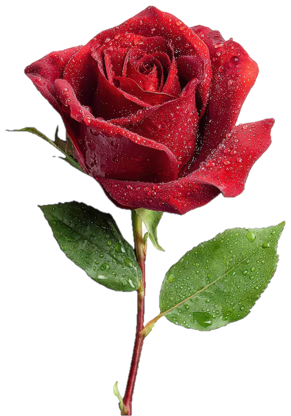

Sin fecha · Sin límiteEspero que te gusten.
Tii Amooouuuuu.
Veinte cosas
lindas de vos.
No hay nada que celebrar ni una fecha que esperar.
Solo tocá las rosas, una por una.
Esperando tus rosas
Esto es de relleno: cambiá lo que quieras, son tuyas.
No tengo una fecha para esto ni un motivo que justifique el tamaño de lo que te mandé. No es un cumpleaños, no es un aniversario, no es nada. Es un martes cualquiera y aun así quise hacer algo grande.
Hay una fecha que sí importa, y no es esta: el 26 de abril. Ese día hablamos por primera vez y sin querer algo empezó a andar. Todo lo que está arriba de acá son las cosas que sé de vos, escritas para que las vayas encontrando.
Armé veinte rosas porque veinte es un número que se puede contar con los dedos y porque me gustaba la idea de que pudieras ir descubriendo una por una. Y te aclaro algo importante: acá no caben veinte. Solo elegí veinte, y ya me quedé con ganas de escribir todas las demás.
Lo que más me gusta de vos no es una sola cosa, es una suma. Que te acordás de los detalles. Que no te da pudor querer. Que cuando algo te importa, se nota. Que tenés una forma de decir lo que pensás que no hiere a nadie y sin embargo igual deja huella. Eso no se enseña, se tiene o no se tiene.
No te voy a prometer que nada va a cambiar, porque sería mentira. Sí te prometo esto: esto no se termina acá, y vas a seguir teniendo cositas lindas nuevas todos los días.
Gracias por existir con ese ruido que hacés en la vida de la gente que te quiere.